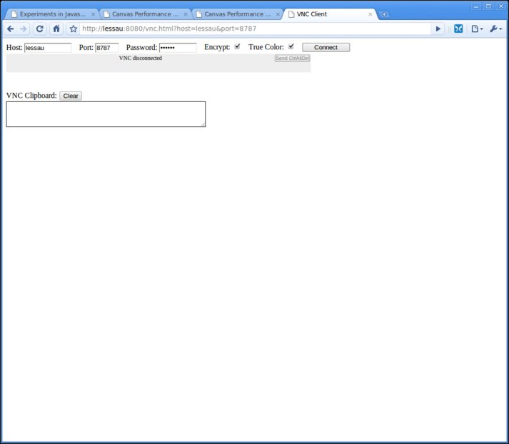
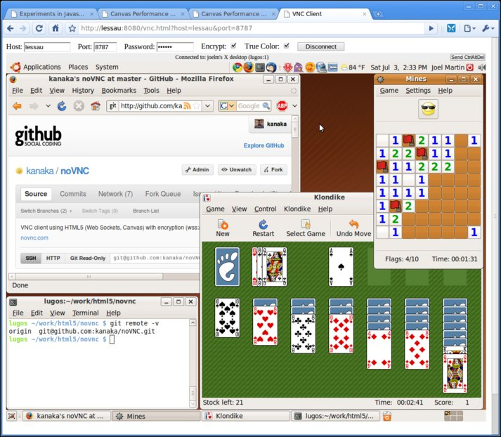

See homepage and README for more info.
noVNC is designed to be easily integrated into other websites so my focus is on function with minimal fluff. So yes, my screenshots are pretty boring. If you have a cool shot of noVNC in action, put it on flikr (or wherever) and let me know and if I like it I'll add it here.

